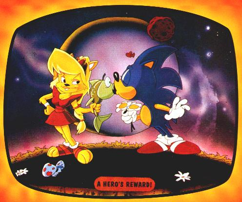
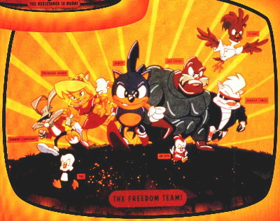
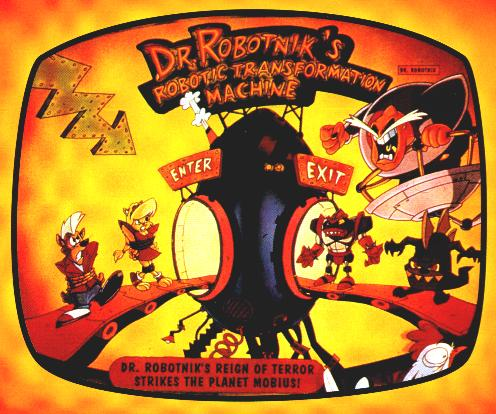

Ever wonder what a cartoon goes through BEFORE it hits the airwaves? Well thanks to Sarah "Samanfur" Rose we can finally take a look at what MIGHT HAVE BEEN...
Years ago, before Sonic SatAM premiered in England, these pictures showed up in "Sonic The Comic" advertising and telling kids to watch for the new Sonic cartoon to come soon! What would come to be known to England fans as "The Mystery cartoon" and not known to few Sonic fans in America,
serves as a glimpse at what might have been in the series, before drastic changes were made in both style (and possibly substance) of the cartoon. Ladies AndGentlemen: Meet The Freedom Team...

Click the picture to enlarge. Meet The Freedom Fighters - From left to right, we have:
Johnny Lightfoot - Rabbit Character. Possibly later to become Bunnie Rabbot in America, thus replacing the grey fur and jacket, to become a woman, and partially roboticised. Johnny Lightfoot has been used since the beginning in Fleetway continuity.
Tux The Penguin - Penguin Character. Most likely thrown out in final concept of the series. Note the resemblance to the "small animal characters" that you usually break out of The Badniks in Sonic games.
Princess Acorn - The most GLARING of character differences, note that Princess Acorn is NOT known by the name of "Princess Sally". Her fur is no longer brown, she no longer has auburn hair and is currently blonde. The blue vest is missing to be replaced by a red dress, and note that she now has "lips". Another thing is the way she is drawn. Even more noteable is that this version was rejected later for the "cuter" and more well known "Pink Princess Sally" with black hair
that was prevalent in the early Archie comics, which was then changed after the 1st episode of SatAM to the normal version...
Sonic The Hedgehog - DiC Animation may have gotten Sonic's spikes wrong before, but here they look even more different than in AoSTH. He has a similar SatAM design, but overall his spike exists as a straight "mohawk" along his back.
Joe Sushi - Later to become Rotor The Walrus, note that this character is also completely different. Brown, muscular, and with the typical "walrus moustache", Joe's design looks meaner as opposed to Rotor's look - a fatter, purple walrus that is rather quiet and reserved. Something you don't get at all by looking at Joe Sushi...
Chirps - Along the lines of Tux, this charatcer was probably thrown out in the final version as well. He also bears a resemblance to the "cute animals" that you typically free from most Badniks.
Porker Lewis - Just like Johnny Lightfoot, Porker Lewis has been an established character of Fleetway for quite a while, but this ISN'T the same Porker we find in Fleetway. While that Porker sports a brown leather jacket, this one sports a black one and looks to have a "punkish streak" in him, whereas the Porker from Fleetway is a quieter character (not like Rotor) but reserved to some extent. totally opposite in personality here.
Flicky - GLARING character #2. Flicky the bird looks A) Nothing like the flicky birds of today or the past Sega Master System Flicky game and B) Nothing like Tails The Fox >;) Yes, this character was most likely to have been used BEFORE Tails. Why is that? Simple - most likely these pictures were created BEFORE Sonic 2 and after Sonic 1. SatAM premiered after Sonic 2's release, why would you need two flying characters on a team in a cartoon, especially when one would overshadow the other being hailed as Sonic's sidekick. Where DiC got the name "Flicky" from without the design of the typical flicky is beyond us. But this is the most interesting character for the simple fact of who he is and why he was most likely thrown out.
Big difference between SatAM isn't it? These few pictures show a big difference in the final make of the series. But the most interesting fact is that years ago Sega Of America had a page titled "All About Sonic" which actually had the names of Tux, Joe Sushi, and Johnny Lightfoot
as past characters associated with Sonic. Supposedly Lightfoot taught Sonic his speed, Joe taught Sonic to swim, and Tux told Sonic of Robotnik trapping helpless animals in robots. All three characters were later changed as the series opted for a darker look to it as opposed to the already "dark yet humorous" look these pictures depict.
But what happened to Doctor Robotnik and the Roboticiser?

Needless to say, this Doc Botnik is a VERY apparent character change, while looking similar to the old SatAM Robotnik (not current Sonic Adventure Eggman Robotnik) because of his fat, he literally looks NOTHING like the next design - no cape, no shoulder guards, no red and orange jumpsuit,
and WHITE moustache. BIG difference. Note that the Egg-O-Matic is not here as well (though that may be on purpose due to the fact he's on some sort of floating platform). And lastly, the roboticiser is now the "Robotic Transformation Machine" and instead of the usual "Roboticiser Glass Cells", you instead have a treadmill where in goes an animal, and out comes the roboticised
creature.
Overall this is much different from the series we know of today, and serves as a good look into what some cartoons look like before they hit the air. To see what it evolved into, check the SatAM Sonic page on our main links. We'll be updating this page
with more concepts such as the "Pink Sally", the previous "Bunnie Rabbot" design from the original Sonic miniseries and anything else. Later!
|
|
| |

{kind=link}